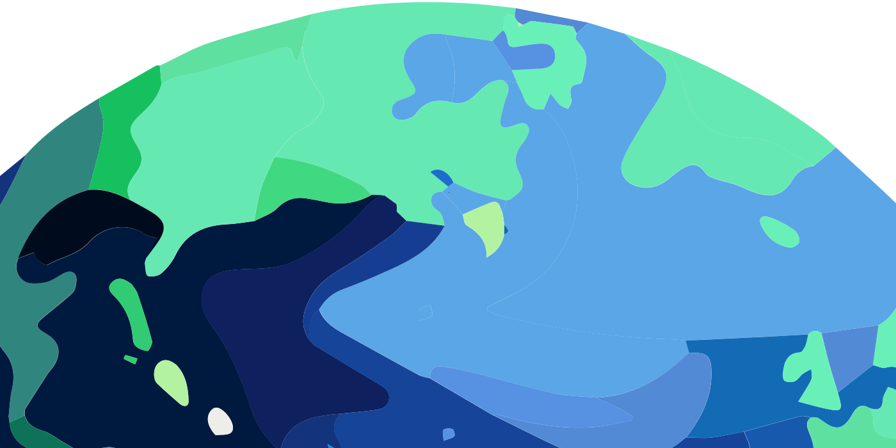

<!DOCTYPE html>
<html lang="en">

<meta name="viewport" content="width=device-width, initial-scale=1.0">
<script src="./index.js" defer></script>
<link rel="stylesheet" href="./index.css">

<link rel="preconnect" href="https://fonts.googleapis.com">
<link rel="preconnect" href="https://fonts.gstatic.com" crossorigin>
<link href="https://fonts.googleapis.com/css2?family=Short+Stack&display=swap" rel="stylesheet">

<title>Climate Model</title>
	
<article class="app">
	<div class="scene">
		<div class="earth">
			<div class="earth-wrap">
				<div class="atmosphere"></div>
				
				
			</div>
		</div>
		<div class="sun"></div>
		<!-- arrows -->
		<div class="arrows">
			<svg class="arrow-flux" viewBox="0 0 300 500" version="1.1" xmlns="http://www.w3.org/2000/svg">
				<defs>
					<linearGradient id="arrow-gradient" gradientUnits="objectBoundingBox" x1="50%" y1="0%" x2="50%" y2="100%">
      				<stop offset="0%" stop-color="#facd56" />
						<stop offset="100%" stop-color="#facd5600" />
					</linearGradient>
				</defs>
				<polygon points="150,0 300,200 200,200 200,500 100,500 100,200 0,200" style="fill:url('#arrow-gradient');stroke:none"/>
			</svg>
			<svg class="arrow-albedo" viewBox="0 0 300 500" version="1.1" xmlns="http://www.w3.org/2000/svg">
				<polygon points="150,0 300,200 200,200 200,500 100,500 100,200 0,200" style="fill:url('#arrow-gradient');stroke:none"/>
			</svg>
			<svg class="arrow-infrared" viewBox="0 0 300 500" version="1.1" xmlns="http://www.w3.org/2000/svg">
				<polygon points="150,0 300,200 200,200 200,500 100,500 100,200 0,200" style="fill:url('#arrow-gradient');stroke:none"/>
			</svg>
		</div>
		
		<div class="surface-temp">
			<svg class="thermometer-svg" version="1.1" xmlns="http://www.w3.org/2000/svg" viewBox="0 0 85 160" role="img"
				aria-labelledby="thermometer_title thermometer_desc">
		
				<title id="thermometer_title">Thermometer</title>
				<desc id="thermometer_desc"></desc>
		
				<defs>
					<mask id="mercury-mask" maskUnits="userSpaceOnUse" x="0" y="0" width="100" height="160">
						<path d="M42,120 l0-100 a10 10 0 1 0 -20 0 l0,100 a15 15 0 1 0 20 0 z" stroke="black" stroke-width="12"
							fill="white" />
					</mask>
				</defs>
		
				<path d="M42,120 l0-100 a10 10 0 1 0 -20 0 l0,100 a15 15 0 1 0 20 0 z"
					style="fill:white;stroke: none; stroke-width: 2px" />
		
				<g mask="url(#mercury-mask)">
					<rect fill="#E74D3C" fill-opacity="0.2" width="200" height="160" />
					<rect id="mercury" fill="#E74D3C" y="122" width="200" height="160" />
				</g>
			</svg>
			<p>Earth’s average surface temperature: <br><span id="surfaceTemp"></span></p>
		</div>
	</div>
	<div class="sliders-wrap">		
		<ui-range-input
			id="solar-flux"
			min="0"
			max="110"
			step="1"
			value="100"
			output-suffix="%"
			label="Energy from the Sun">
		</ui-range-input>
		<ui-range-input
			class="d-none"
			id="visible-transimittance"
			min="0"
			max="100"
			step="1"
			value="80"
			output-suffix="%"
			label="Visible transmittance">
		</ui-range-input>
		<ui-range-input
			id="infrared-transimittance"
			min="0"
			max="100"
			step="1"
			value="10"
			output-suffix="%"
			label="Greenhouse gases">
		</ui-range-input>
		<ui-range-input
			id="albedo"
			min="0"
			max="100"
			step="1"
			value="30"
			output-suffix="%"
			label="Earth's reflectivity">
		</ui-range-input>
		<button id="reset" class="reset">
			Reset to current values
		</button>
	</div>

</article>

</html>